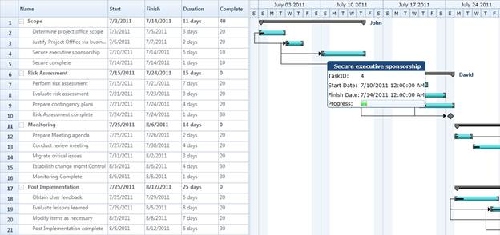

CustomToolTip
Essential Gantt provides tooltip
support for the TaskBar. Tooltip is a small pop-up box, which is usually
displayed on mouse hover. This is used to display additional information about
the elements without increasing the window size. Essential Gantt provides
support to add customizable tooltip. You can add text or image to your tooltip
as needed.
Properties
|
Property |
Description |
Type |
Data Type |
|
ToolTipTemplate |
Gets or set the TaskBarCollection Property of
GanttControl |
Dependency Property |
DataTemplate |
Adding CustomToolTip to Gantt
The following code illustrates how to add a custom tooltip to
the Gantt control.
|
[XAML]
<DataTemplate x:Key="ToolTipTemp">
<Grid>
<Grid.ColumnDefinitions>
<ColumnDefinition />
<ColumnDefinition />
</Grid.ColumnDefinitions>
<Grid.RowDefinitions>
<RowDefinition Height="40" />
<RowDefinition Height="40" />
<RowDefinition Height="40" />
<RowDefinition Height="40" />
<RowDefinition Height="40" />
</Grid.RowDefinitions>
<Border Grid.Column="0" Grid.Row="0"
Margin="-2"
CornerRadius="5" Grid.ColumnSpan="2" Background="#FF1F4877"
BorderThickness="2">
<TextBlock Margin="5,0,0,0"
Text="{Binding TaskName}"
HorizontalAlignment="Center"
VerticalAlignment="Center" FontWeight="Bold"
FontFamily="Verdana" Foreground="WhiteSmoke" />
</Border>
<TextBlock Margin="1"
Text="TaskID:" Grid.Column="0"
Grid.Row="1"
VerticalAlignment="Center"
FontFamily="Verdana" />
<TextBlock Margin="1" Text="{Binding TaskId}"
Grid.Column="1"
VerticalAlignment="Center" Grid.Row="1"
FontFamily="Verdana" />
<TextBlock Margin="1" Text="Start Date:" Grid.Column="0"
Grid.Row="2"
VerticalAlignment="Center"
FontFamily="Verdana" />
<TextBlock Margin="1" Text="{Binding StartDate}" Grid.Row="2"
Grid.Column="1"
VerticalAlignment="Center"
FontFamily="Verdana" />
<TextBlock Margin="1" Text="Finish Date:" Grid.Column="0"
Grid.Row="3"
VerticalAlignment="Center"
FontFamily="Verdana" />
<TextBlock Margin="1" Text="{Binding FinishDate}" Grid.Column="1"
Grid.Row="3"
VerticalAlignment="Center"
FontFamily="Verdana" />
<TextBlock Margin="1" Text="Progress:" Grid.Column="0"
Grid.Row="4"
VerticalAlignment="Center"
FontFamily="Verdana" />
<ProgressBar Margin="1" Height="25" Value="{Binding Progress}"
Grid.Column="1"
VerticalAlignment="Center"
Grid.Row="4" />
</Grid>
</DataTemplate>
<Sync:GanttControl x:Name="Gantt" ToolTipTemplate="{StaticResource ToolTipTemp}"/>
|

Figure 27: Custom ToolTip Demo
Samples Link
To view samples:
1. Select
Start -> Programs -> Syncfusion -> Essential
Studio x.x.xx -> Dashboard.
2. Click Run
Samples for WPF under User Interface Edition panel .
3. Select
Gantt.
4. Expand the
Interactive Features item in the Sample Browser.
5. Choose the
CustomToolTip samples to launch.